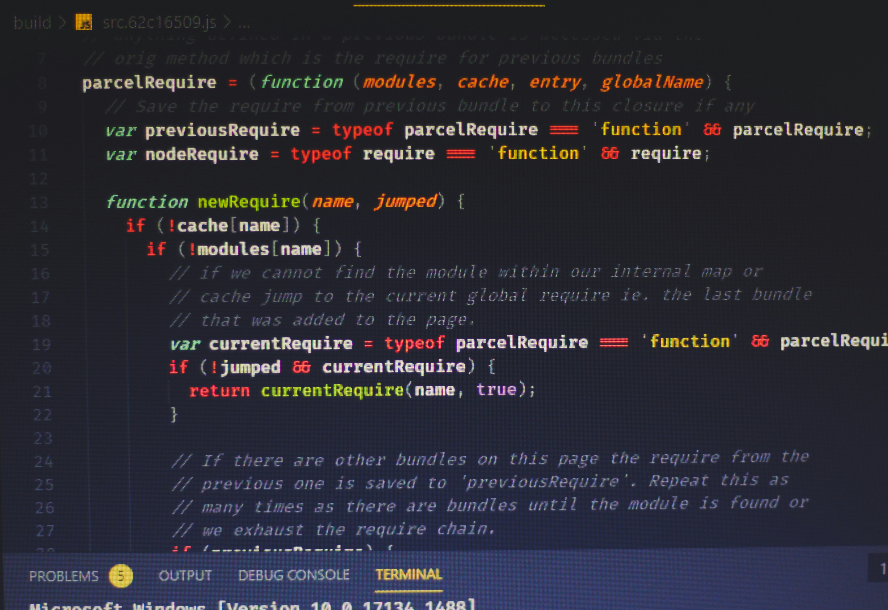

자바스크립트(영어: JavaScript)는 객체 기반의 스크립트 프로그래밍 언어이다. 이 언어는 웹 브라우저 내에서 주로 사용되며, 다른 응용 프로그램의 내장 객체에도 접근할 수 있는 기능을 가지고 있다. 또한 Node.js와 같은 런타임 환경과 같이 서버 프로그래밍에도 사용되고 있다.
자바스크립트는 본래 넷스케이프 커뮤니케이션즈 코퍼레이션의 브렌던 아이크(Brendan Eich)가 처음에는 모카(Mocha)라는 이름으로, 나중에는 라이브스크립트(LiveScript)라는 이름으로 개발하였으며, 최종적으로 자바스크립트가 되었다.
자바스크립트가 썬 마이크로시스템즈의 자바와 구문이 유사한 점도 있지만, 이는 사실 두 언어 모두 C 언어의 기본 구문에 바탕을 뒀기 때문이고, 자바와 자바스크립트는 직접적인 연관성은 약하다. 이름과 구문 외에는 자바보다 셀프나 스킴과 유사성이 많다.
자바스크립트는 ECMA스크립트(ECMAScript)의 표준 사양을 가장 잘 구현한 언어로 인정받고 있으며 ECMAScript 5(ES5)까지는 대부분의 브라우저에서 기본적으로 지원되었으나 ECMAScript 6 이후부터는 브라우저 호환성을 위해 트랜스파일러로 컴파일된다.[4]
HTML/CSS와 완전히 통합할 수 있습니다. 그리고 간단한 일은 간단하게 처리할 수 있게 해줍니다. 모드 주요 브라우저에서 지원하고 기본 언어로 사용됩니다. 이 세가지 모두를 지원하는 브라우저 연관 기술은 자바스크립트뿐이기 때문에 자바스크립트는 브라우저 인터페이스를 만들 때 가장 널리 사용되고 있습니다. 이 외에도 자바스크립트를 이용해 서버나 모바일 앱 등을 만드는 것도 가능합니다.
JavaScript 라이브러리는 웹 개발자가 표준 JavaScript 함수를 실행하기 위해 재사용할 수 있는 미리 작성된 코드 조각의 모음입니다. JavaScript 라이브러리 코드는 필요에 따라 나머지 프로젝트 코드에 연결됩니다. JavaScript 애플리케이션 코드를 집이라고 가정한다면, JavaScript 라이브러리는 개발자가 집의 기능을 개선하는 데 사용할 수 있는 미리 제작된 가구와 같습니다.
데이터 시각화 데이터 시각화는 예를 들어 사용자가 관리자 패널, 대시보드 및 성능 지표에서 통계를 확인하는 데 중요합니다. Chart.js, ApexCharts 및 Algolia Places와 같은 라이브러리에는 차트 및 지도에 데이터를 표시하는 웹 애플리케이션을 만드는 데 사용할 수 있는 내장 함수가 있습니다.
DOM 조작 jQuery 및 Umbrella JS와 같은 라이브러리를 사용하면 메뉴 애니메이션, 이미지 갤러리, 버튼, 라이트박스 등과 같은 표준 웹 사이트 기능을 위한 코드를 제공하므로 쉽게 웹 개발을 할 수 있습니다.
양식 모든 웹 개발은 웹 사이트 방문자가 누군가에게 연락하고, 제품을 주문하고, 이벤트에 등록하기 위한 양식을 사용합니다. wForms, LiveValidation, Validanguage, qForms와 같은 일부 JavaScript 라이브러리는 양식 검증, 레이아웃, 조건, 변환 등의 양식 기능을 단순화합니다.
수학 및 텍스트 함수 많은 웹 애플리케이션은 수학 방정식을 풀고 날짜, 시간 및 텍스트를 처리해야 합니다. 이러한 모든 요청을 서버로 보내는 대신 클라이언트 측에서 일부 요청을 처리하는 것이 더 효율적입니다. 웹 개발자는 Date.js, Sylvester 및 JavaScript URL 라이브러리와 같은 JavaScript 라이브러리를 사용하여 이를 수행합니다.